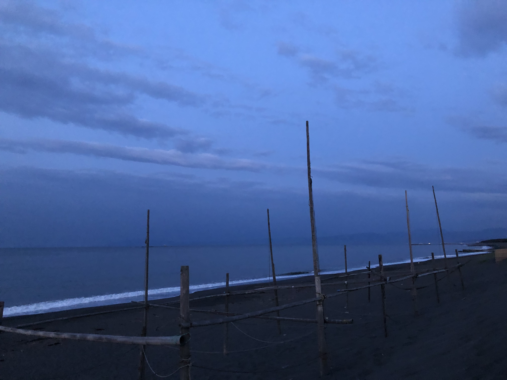
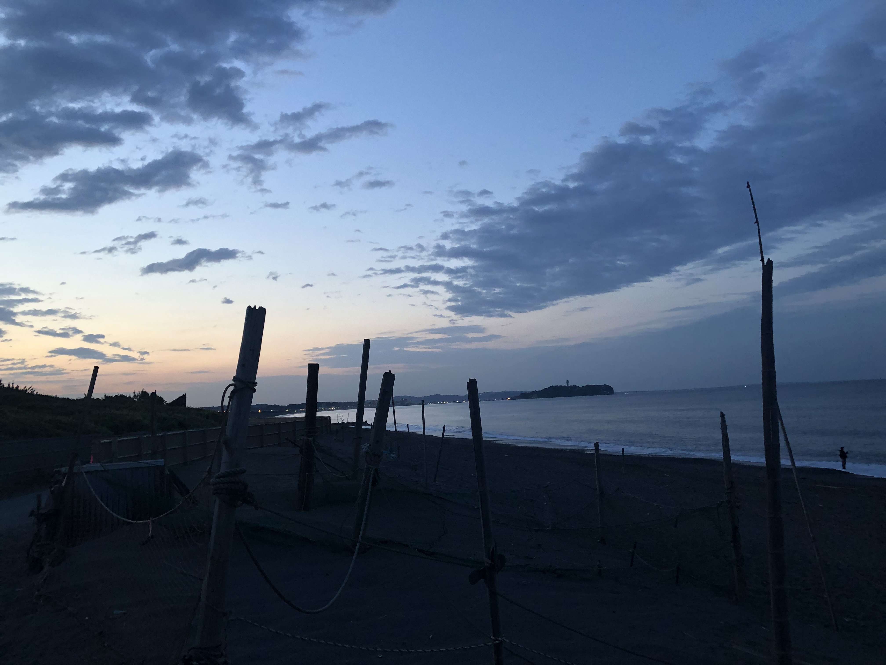

早朝ランニング
2021.05.11
コロナでストレスが溜まるこのご時世。
こんな日は早朝のランニングがおすすめです。
早朝なら人も少なくて、すれ違ったとしても3.4人程度です。
天気は良好で、どうせなら日の出を拝みに行こうと思い、
早朝3時に気合十分で外に飛び出します。
５月になって少し暖かくなっては来ましたが、夜明け前はまだまだ寒いです。
自分はランニング中音楽を聴きながら走るのですが、今回は最近ハマっている
「Kroi」というバンドの楽曲を聴きながら走ってました。おすすめです。
１時間ほど走ったところでランニング終了。
海辺近くのコンビニにてお水を購入し水分補給し休憩。その後はゆっくり歩きながら海辺へ。
道中冷えてきたので自販機であったかいコーヒーを購入。やはり早朝は寒いです。
海辺に到着。近所にある湘南サザンビーチです。
まったく人影はなく、波の音だけが聞こえます。
普段日の出を見るのは夜勤明けの職場でぐらいなので、なんだか新鮮です。

コロナで大変な世の中ですので、是非皆さんも早朝ランニングしてみてください。
ストレス発散になり、頭も体もすっきりします。おすすめです！